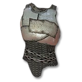

In 7 days to die, there are many different things a player can do that affect the character they control. Whether it be to protect them or bolster their offensive abilities, whether these modifications be internal or external, there are many different options.
Clothing
For the most part, clothing is mainly there to protect you from the elements, the heat and the cold. Some pieces of clothing are better at one than the other though, for instance;
This is a puffer coat, it has a cold resistance of between 21.5 and 26.5 and a heat resistance of between 1.5 and 2.5. As you can see, if you wear this coat, you'll be very resistant to the cold, and very vulnerable to the heat.
Armor
Another thing a player can wear is armor, this usually does not come with resistance to weather, but instead with resistance to damage. The two main classes of armor are light and heavy (along with their various subclasses). Heavy armor provides higher defence than light armor, so it may be tempting to just pick that, however, heavy armor also restricts mobility far more than light armor does. For instance;
This is padded chest armor, it can have an armor rating of between 5.1 and 7.3. This is rather low, but it does not restict the mobility of the player at all.
This is iron chest armor, it can have an armor rating between 7.3 and14 which is noticably better than the padded chest armor, however, it restricts mobility by 6%, reduces the rate the player will regenerate stamina by 9%, and increases the amount of noise the player makes by 20%. Clearly, heavy armor will make running and hiding from the enemy much more difficult, but it will also make it less necessary.
Mods
Both clothing and armor can both be modified by adding things to their various equip slots. The level of the item will change how many mod slots it can have. At level 1 a piece of equipment will only have 1 mod slot, but this will increase to 2 slots at level 3, 3 slots at level 5, and each piece maxes out at 4 mod slots at their max level of 6. Mods can do many different things. For instance;
This is an Armor Plating Mod, it increases the armor rating of whatever piece of armor it is attached to, pretty simple.
This is an Armor Pocket Mod, this mod doesn't affect the armor it is attached to, rather, it increases the amount of items a player can carry before they become encumbered.
This is a Water Purifier Mod, if attached to a helmet, it will allow the player to drink dirty water without risking getting sick.
Skills and Attributes
Each time the player levels up, they will get 1 skill point, they can spend these on any skill or attribute they wish. However, every skill is a part of an attribute, and to level up a skill, you have to level up the attribute it's a part of first. For instance, the ability to craft and use shotguns is a part of the strength attribute, to learn how to use shot guns more efficiently, you need to level up your strength. The same thing can be said about the ability to use rifles being a part of the perception attribute.
Weapons
Being protected and skillful is nice, but without something to fend off your enemies, the best protection in the game won't save you. This is where weapons come in. In the most basic forms, there are two types of weapons, those being melee and ranged, but of course there is plenty of variation in those. For instance;
This is a Double Barrel Shotgun, it fires a spray of small pellets and must be reloaded after two shots. At close range it does massive damage, but the farther away you are from the target, the less damage they'll take (the game has a term to label this; Effective Range). This gun has an effective range of 4.
This is a hunting rifle, it's damage will stay the same at a very long range and it must reload after every shot. It's a very basic gun to use for longer range and has an effective range of 70.
This is a Wooden Club, it is the most basic melee in the game, and the first that the game teaches you how to make. It has a normal swing, and a power attack which deals more damage, but costs more stamina.
This is a Stone Spear, it is also a melee weapon, but unlike the club it's power attack is not just a more powerful version of it's normal one. It's normal attack shows the player stabbing, using a power attack will cause the player to throw the spear.